UDN
Search public documentation:
MOBAKitCH
English Translation
한국어
Interested in the Unreal Engine?
Visit the Unreal Technology site.
Looking for jobs and company info?
Check out the Epic games site.
Questions about support via UDN?
Contact the UDN Staff
한국어
Interested in the Unreal Engine?
Visit the Unreal Technology site.
Looking for jobs and company info?
Check out the Epic games site.
Questions about support via UDN?
Contact the UDN Staff
MOBA初学者工具包
上次对UDK测试时间为 2012 年 5 月
概述
这个初学者工具包可作为您使用虚幻3或UDK开发 多人在线竞技场战斗 游戏的起始工具
相机系统是如何工作的？
 在MOBA初学者工具包中内建2种相机系统。 固定相机系统被用在移动平台上，比如iPad，PC平台上使用更为传统的RTS相机系统。 请阅读 MOBA移动平台相机页面或MOBA PC相机页面来学习相机系统如何工作。 迷你地图也可以控制相机；这被记录在下方的迷你地图部分。
在MOBA初学者工具包中内建2种相机系统。 固定相机系统被用在移动平台上，比如iPad，PC平台上使用更为传统的RTS相机系统。 请阅读 MOBA移动平台相机页面或MOBA PC相机页面来学习相机系统如何工作。 迷你地图也可以控制相机；这被记录在下方的迷你地图部分。
控制系统是如何工作的？
 在MOBA初学者工具包中内建2种控制系统。 触控板控制界面可用于所有触摸板设备比如iPad,及用于PC的鼠标键盘控制界面。 请阅读 MOBA触摸板页面或MOBA键盘和鼠标页面 来学习控制系统如何工作。
在MOBA初学者工具包中内建2种控制系统。 触控板控制界面可用于所有触摸板设备比如iPad,及用于PC的鼠标键盘控制界面。 请阅读 MOBA触摸板页面或MOBA键盘和鼠标页面 来学习控制系统如何工作。
creep系统是如何工作的？
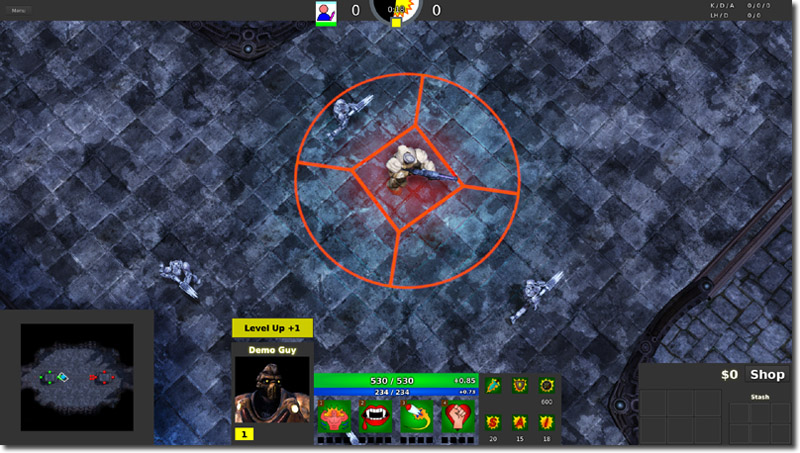
Creep是团队控制的非玩家控制器的pawn，会自动跑向敌人基地。 当它们沿途遇到敌人英雄，塔或其他creep,它们会与敌人交战。 请阅读 MOBA creeps页面来学习creep如何工作。英雄系统是如何工作的？
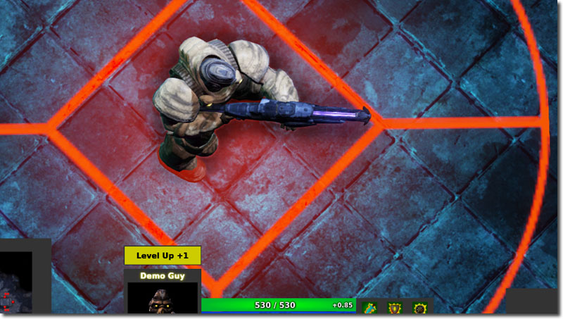
英雄是玩家控制的pawn. 它们有可供使用的卷轴并且他们可以购买和使用物品。 请阅读 MOBA英雄页面来学习英雄如何工作。物品系统是如何工作的？
 物品与创建入虚幻3或UDK的武器项不同。 从卷轴而来的物品子类在有些时候可以像卷轴那样发挥作用。 请阅读 MOBA物品页面来学习物品如何工作。
物品与创建入虚幻3或UDK的武器项不同。 从卷轴而来的物品子类在有些时候可以像卷轴那样发挥作用。 请阅读 MOBA物品页面来学习物品如何工作。
迷你地图是如何工作的？
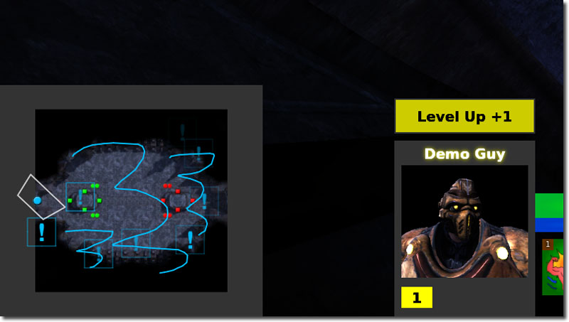
迷你地图是很灵活的系统，您可以用在其它项目中，比如实时策略游戏或第一人称设计游戏中。 请阅读 MOBA迷你地图页面来学习迷你地图如何工作。卷轴系统是如何工作的？
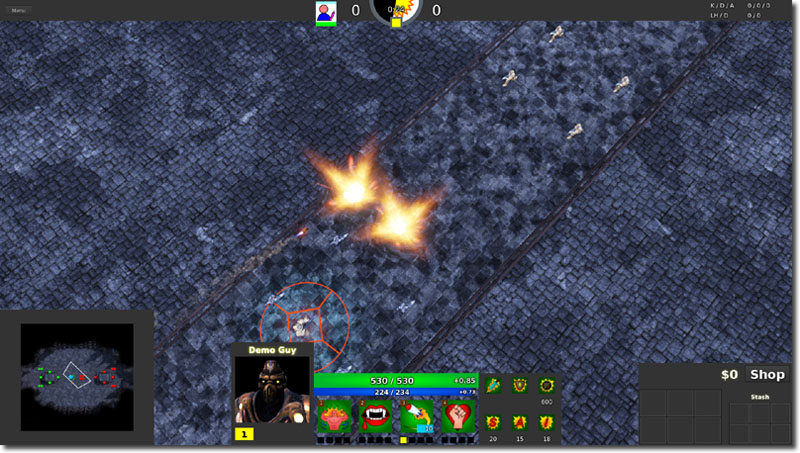
卷轴是Actor可拥有的能力。 卷轴可激活来在游戏中执行特殊事件。 请阅读 MOBA卷轴页面 来学习卷轴如何工作。商店系统是如何工作的？
 商店可以让玩家从用户界面处购买项目。 请阅读 MOBA商店页面来学习此系统如何工作。
商店可以让玩家从用户界面处购买项目。 请阅读 MOBA商店页面来学习此系统如何工作。
统计数据系统是如何工作的？
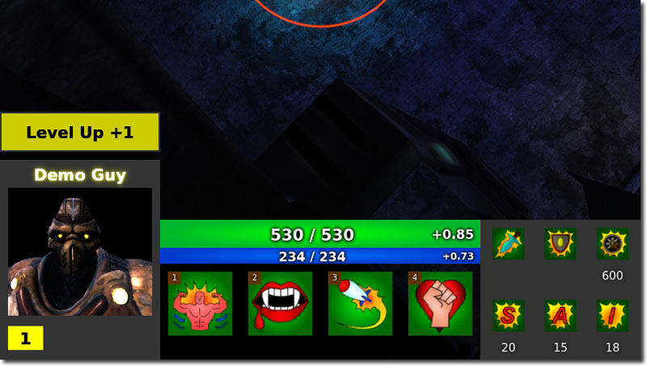
MOBA是“轻度”RPG，您的英雄可以升级和获取数据来改善生命值，伤害等方面数值。 道具和卷轴也可以影响您英雄的数据，上升或下降。 请阅读 MOBA统计数据页面来学习此系统如何工作。用户界面是如何工作的？
 Scaleform在此初学者工具包中被用来创建用户界面。 一些用户界面在合适的页面被解释（比如，用户界面的迷你地图部分在迷你地图页面被解释） The MOBA UI 页面 涵盖了任何没有列于此处的主要标题的用户界面的剩余部分。
Scaleform在此初学者工具包中被用来创建用户界面。 一些用户界面在合适的页面被解释（比如，用户界面的迷你地图部分在迷你地图页面被解释） The MOBA UI 页面 涵盖了任何没有列于此处的主要标题的用户界面的剩余部分。
武器系统的工作原理？
 虚幻3或UDK的武器是玩家可使用的仓库项目 在MOBA初学者工具包中，这种程度的提取非必需，因为玩家永远无法更换武器或丢掉武器。 因此一个更为简单的界面被创建来简化英雄，creep和塔武器使用的流程。 请阅读 MOBA武器页面 获得更多细节。
虚幻3或UDK的武器是玩家可使用的仓库项目 在MOBA初学者工具包中，这种程度的提取非必需，因为玩家永远无法更换武器或丢掉武器。 因此一个更为简单的界面被创建来简化英雄，creep和塔武器使用的流程。 请阅读 MOBA武器页面 获得更多细节。
如何使用这个初学者工具包
- 下载 UDK。
- 安装 UDK。
- 下载包含初学者工具包的zip文件。
- 将内容解压缩到您的 UDK 基础目录中。 （ 例如 C:\Projects\UDKMOBA-2012-05\) Windows 通知您可能会覆盖现有文件或文件夹。 一直点击 Ok。

- 使用 Notepad 打开 UDKGame\Config 目录里面的 DefaultEngine.ini 。 (例如 C:\Projects\UDKMOBA-2012-05\UDKGame\Config\DefaultEngine.ini)
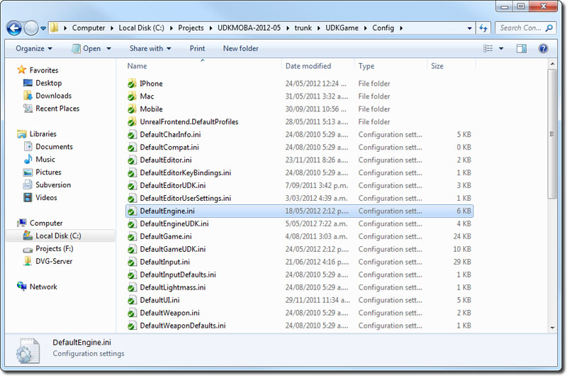
- 搜索 EditPackages 。
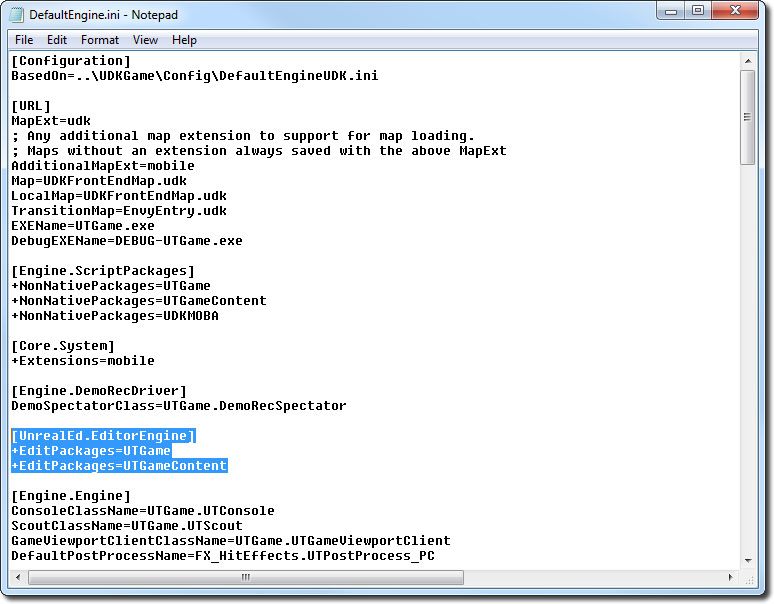
- 添加 +EditPackages=UDKMOBA
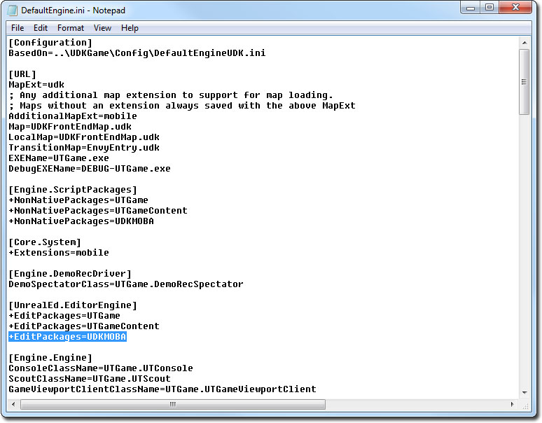
- 启动 Binaries 目录中的 Unreal Frontend Application 。 (e.g C:\Projects\UDKMOBA-2012-05\Binaries\UnrealFrontend.exe)

- 点击 Script（脚本） ，然后 Full Recompile（完全重新编译） 。
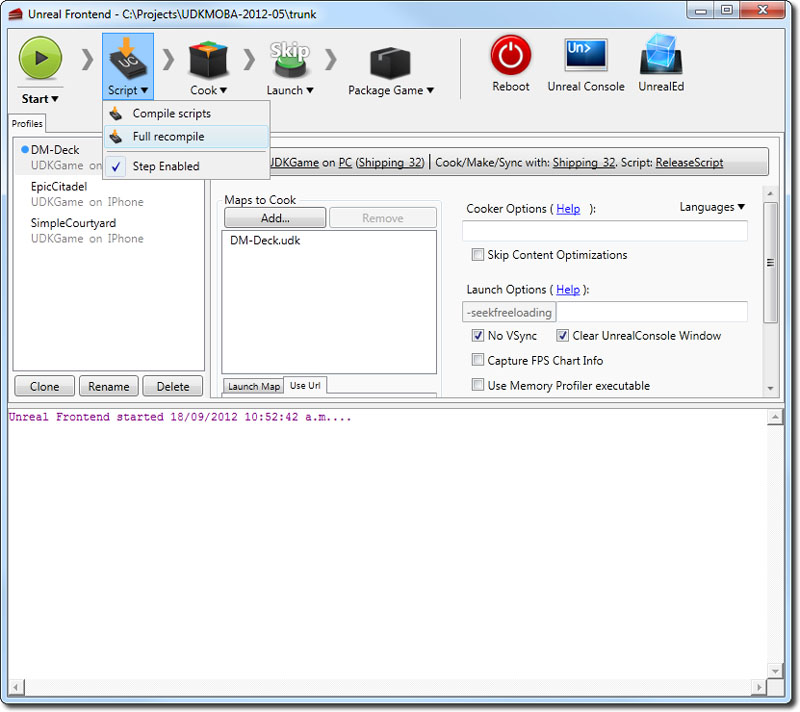
- 您应该可以看到 UDKMOBA 包是最后一个进行编译的。

- 点击 UnrealEd（虚幻编辑器） 打开虚幻编辑器。

- 点击 Open（打开） 按钮，打开 MOBATinyMap.udk 。
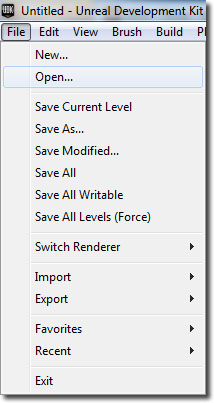

- 点击 Play In Editor（在编辑器中播放） 按钮来学习MOBA初学者包。
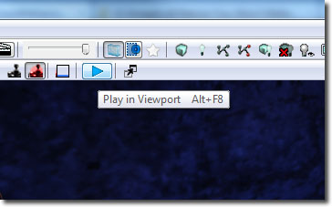
下载
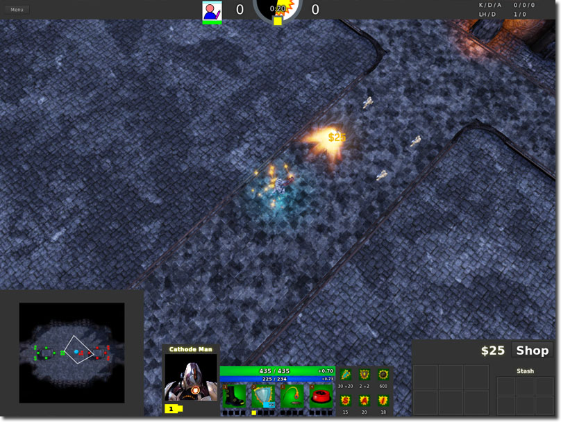
- 下载该初学者工具包的代码和内容。